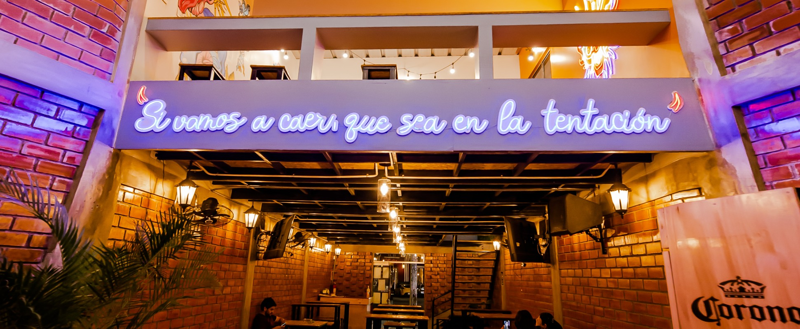

ACERCA DE NOSOTROS
Bienvenidos al 605 Restobar en Chiclayo, Perú, donde la comida marina y criolla se combina con cócteles creativos y la mejor música rock. Nuestro menú ofrece una amplia variedad de platos deliciosos, desde ceviches hasta anticuchos, preparados con ingredientes frescos y de alta calidad. Disfruta de nuestras bebidas artesanales y cócteles mientras te sumerges en un ambiente vibrante y lleno de energía. Ven a vivir la experiencia del 605 Restobar y descubre por qué somos el destino favorito para los amantes de la buena comida, las bebidas y la diversión en Chiclayo.
NOVEDADES


EVENTOS